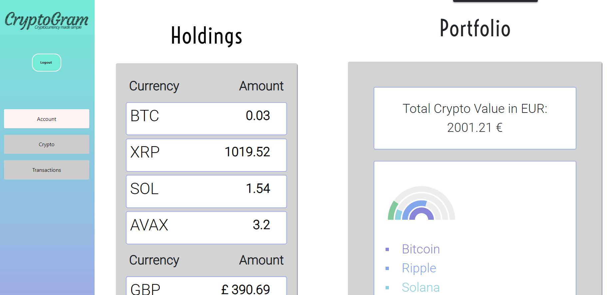
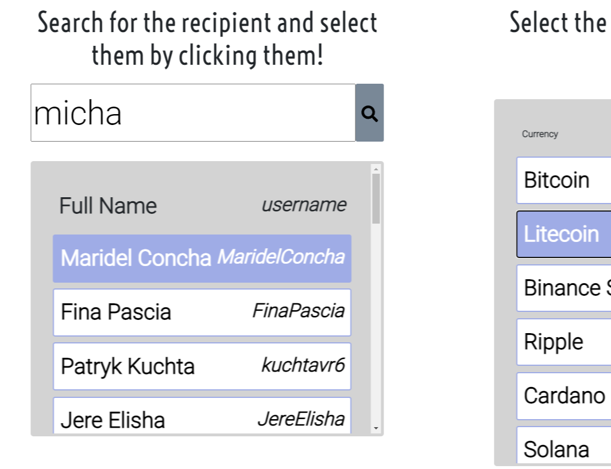
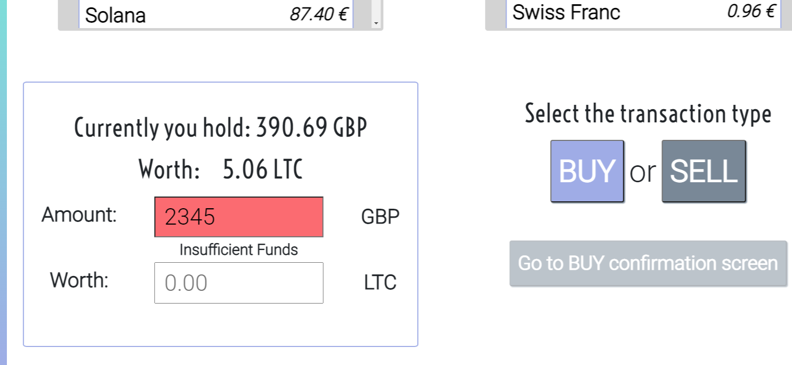

Cryptocurrency Web Application (Winner of 'Best FDM Software Engineering Project 2022')

February 2022 - April 2022
Web application where users, upon making an account, can buy, sell, send, and request various cryptocurrencies. Waterfall Model used for the SDLC, Domain Analysis, Requirements elicitation, Design, Prototyping, and testing all carried out.
- TypeScript
- Domain Analysis
- Requirements Gathering
- Design (e.g. UML diagrams)
- Testing
- ReactJS
- Yarn



 Design Report
Domain Analysis
Requirements gathering
Design Report
Domain Analysis
Requirements gathering